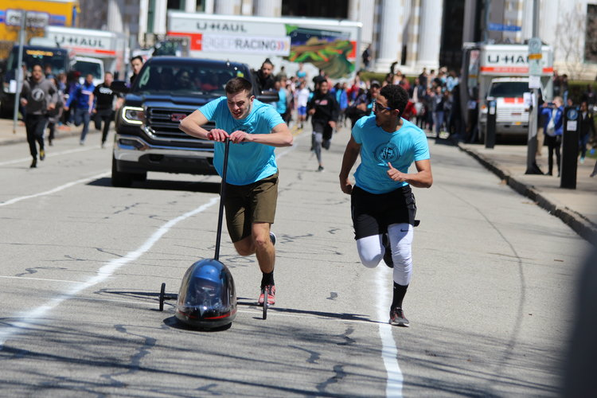

Front Hills
Front Hills
So What is this Buggy Thing Anyway?
Buggy: An Explanation
Buggy (also called Sweepstakes) is a race held annually since 1920 at Carnegie Mellon. Teams of five athletes (the pushers) push an un-motorized vehicle (a buggy) containing a driver around a 0.84 mile course in a relay format where the vehicle serves as the baton. Roughly half of the course is uphill, during which the pushers run and shove the buggy uphill. During the other – downhill – half, drivers are on their own to navigate tight turns at speeds of up to 35mph.
Free Roll
A Sample of Historically Notable Buggies
Schenley Dr.
Currently Active Buggy Teams
The Chute
Notable Records in Buggy History
Back Hills
Leaderboard for Raceday 2023